网摘与知识笔记杂弹
前言
忙活了许久，攻克了一个接一个的难关：
- Offline first with P2P
- 离线(本机)人机对话界面：尝试取代信息配置界面（目前还是需要二者结合）
- 钥匙链的构造规范
- 钥匙对（数字印章）代替注册与登录
- 公开数据的加密与签名规范与实施（部分）
- P2P数据存储与管理
- 基于矢量图（可无极缩放）的家谱树
- 离线(本机)人工智能识别人脸与身体
- 简易动画相片编辑器（自动移位、缩放动画到人脸或者指定位置）
眼看我的原型项目就快完成了，结果我栽在了同步上，没错，就是 PouchDB 引以为豪的同步操作，第一次同步没有问题。第二次同步就歇菜，一大堆的冲突错误，但实际上我根本没有增加任何数据，粗步怀疑后续同步必需保存上一次的last_seq的值，这不科学，万一这玩意弄丢了，那不就再也无法同步到服务器了，这太Low了。我还记得，前面发现一个PouchDB的严重错误：在特定情况下（new_edits=false）的bulkDocs函数并不返回操作成功的的数据。然后PouchDB的维护者说，他必需保证和CouchDB的完全一致，CouchDB的Bug也必需在PouchDB完全重现，于是拒绝了我的PR，并关闭了Issue就当bug不存在！这脑洞到底该有多大。给PouchDB缝缝补补也有些时日，算了，累了，趁这个机会换吧，老早想换，因为PouchDB/CouchDB本来就不适合纯P2P（点对点）的存储，也就是人人都是中心的方式，P2P方式更类似于Git，本来考虑到是原型怎么着都无所谓，做做试验，试水一下，忍忍就过去了，但是，直到今天，再也无法忍了，还是一步到位，直接上Git作为存储。在开搞之前，决定写篇文字放松放松。
以上文字，与我现在要写的文章没有半毛钱关系。
Markdown 笔记
用 Markdown 做笔记是一件简单而惬意的事，当然这得在你熟悉它简单的纯文本格式之后。鉴于我喜欢简单的KISS原则，我心目中最理想的笔记就是保存在文件系统中的纯文本文件，没有数据库(真 database-less)，而文件目录就是笔记的分类，用 front-matter 记录笔记的 meta data（标题, 作者，创作时间，tags…）。
不提EverNote/Notion这类商业软件(资料首选保存到云端，这明智得无语)。开源并支持Markdown笔记软件就非常多了：
- Joplin:
- Cross Note: 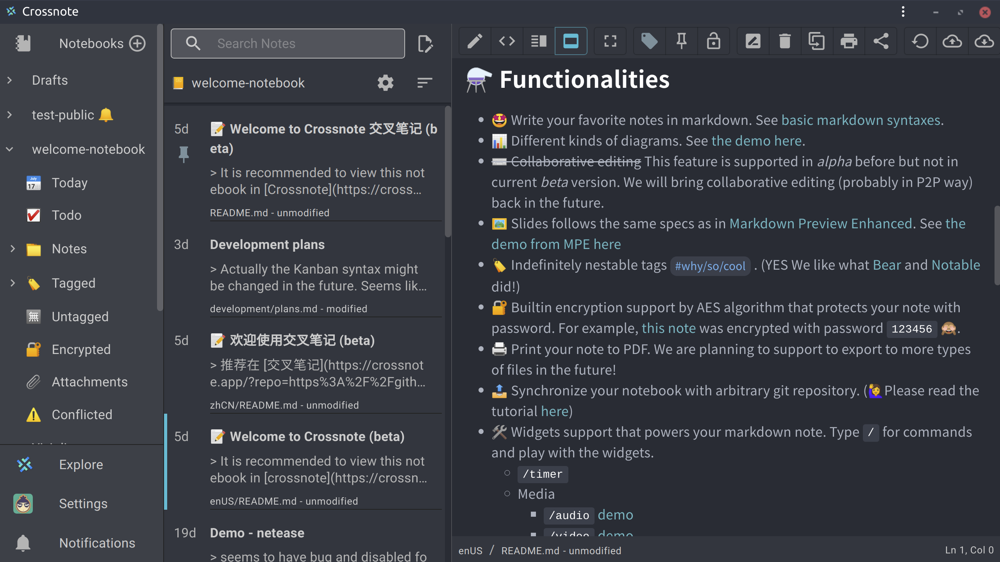
- μPad: 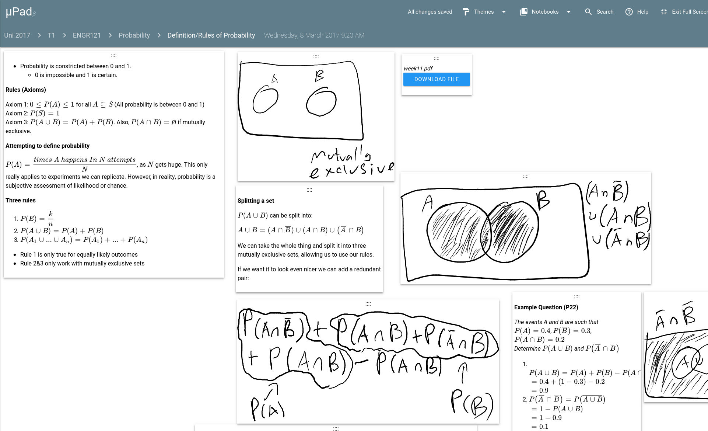
- QOwnNotes: 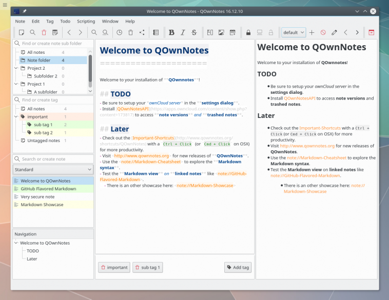
- Zim - A Desktop Wiki: 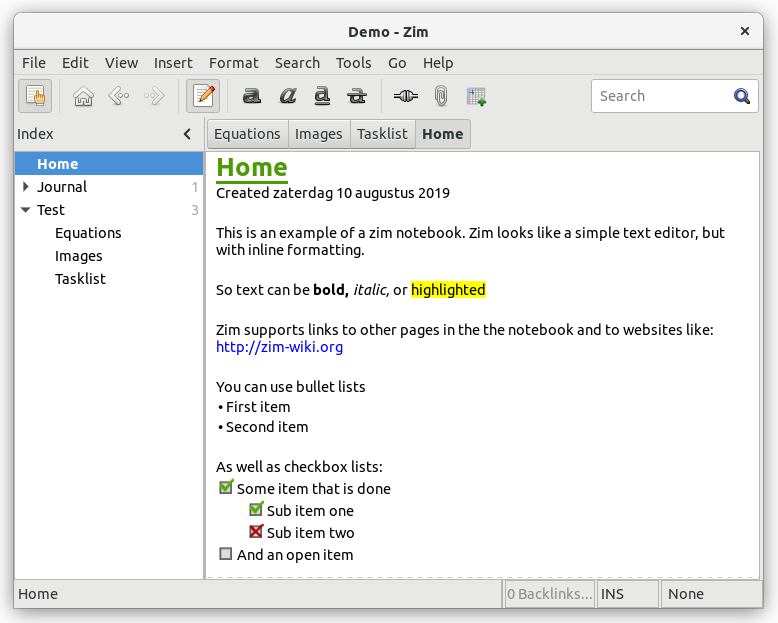
- Cherry tree (can export as Markdown): 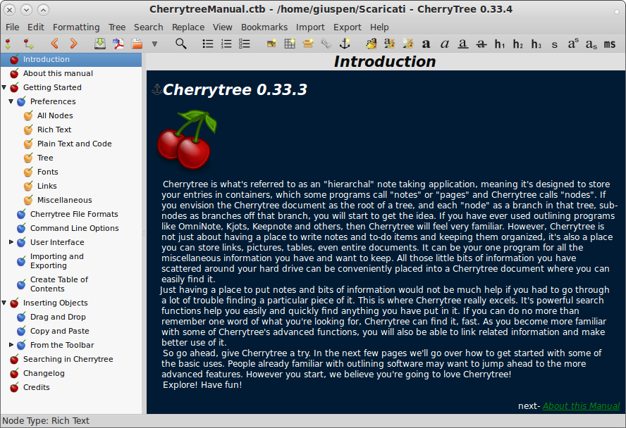
- Notable - Source Closed since v1.5.1: 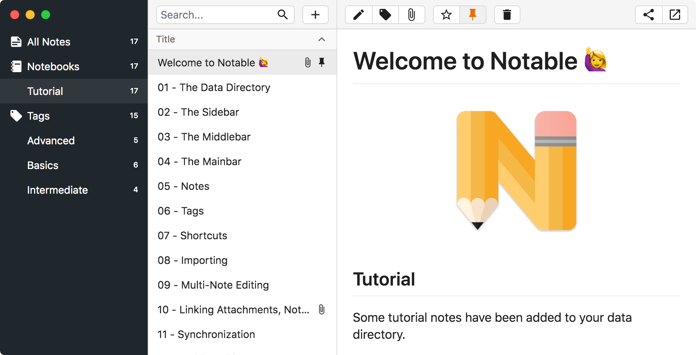
- Markor - Android 平台超棒的 Markdown 记事本（含代办事宜）: 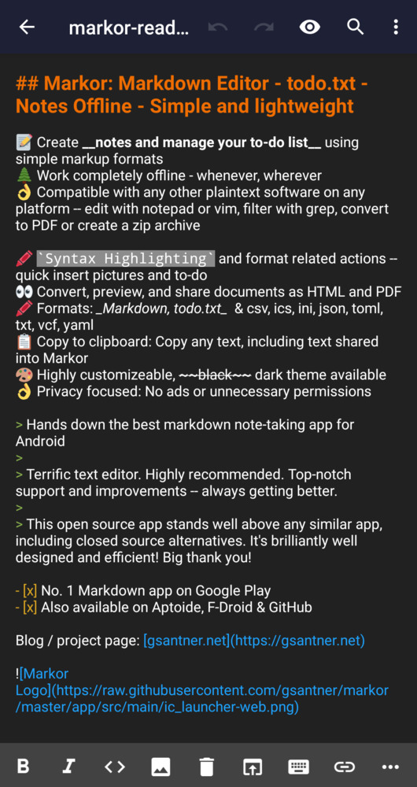
但是能方便进行网摘的就很少了，不过，可以使用网页转换为Markdown的浏览器插件: markdown-clipper，这个Clipper的问题是没保存图像数据。
目前唯一发现的是Joplin提供了网摘的浏览器插件，并且可以保存图像数据，同时提供了手机端。Joplin唯二的问题就是多终端同步冲突容易掉数据，还有就是保存的Markdown文件名称纯是看不懂的UUID，相关meta data是保存在数据库中的。如果再简单一点，用标题作为文件名称，将meta数据放到文章中不香么，对了，还有就是Joplin的图片资源全混在一个目录下，根本分不清是哪一个文章的。
最后，我只用到了Joplin的网摘的浏览器插件: Joplin Web Clipper，然后撸了一个Joplin Web Clipper Server来协同Joplin Web Clipper保存网摘的文章和图片到本地。这样终于可以愉快的解构了，再也不用上面花里狐骚的记事软件：
- VSCode 文本编辑器负责编辑文稿
- Git 负责版本管理和数据同步合并
- Joplin Web Clipper 与 Joplin Web Clipper Server 协同进行网页摘要
网摘 与 Markdown
网摘 原本只是保存链接地址，但这样的話当网站失效后，内容将无迹可寻，
结合 Joplin Web Clipper 与 Joplin Web Clipper Server 协同进行网页摘要。
Joplin Web Clipper 可以对文章全文以及选择部分内容进行提取，然后发送HTML内容到后台进行处理。
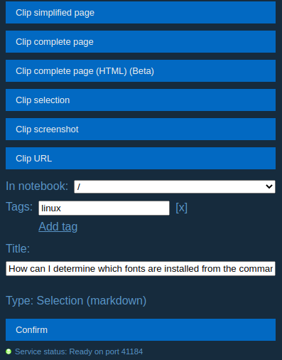
使用Joplin Web Clipper前必需运行Joplin或者Joplin Web Clipper Server。
Joplin Web Clipper Server
Joplin Web Clipper与后端通讯只用到Joplin REST API其中的4个API:
- ping
- Get Folders
- Get Tags
- Post Note
看上去挺简单的吧，感觉是一天可以搞定到事情，却耗费了我整5天的时间。
Joplin Web Clipper Server要求使用的文件夹中至少存在一个子目录。
安装
一个命令行程序，没啥安装的。如果已经安装了Nodejs@12 以上版本，那么直接用 npm or yarn 安装：
# yarn global add h2doc@alpha
npm i -g h2doc@alpha
如果懒得安装 Nodejs@12 ，那么这里提供了常见平台到压缩包供下载：H2DOC 发布包下载.
功能
server 命令
功能如下：
- 转换 HTML 内容为 Markdown 格式
- 下载 HTML 内容中的图像资产
- 一个文件夹就是一个 notebook.
- 保存转换后的 Markdown 文件及图像到指定到文件夹(
root) - 设置存储的文件名和图像资产目录名规则:
- 可将网摘的图像资产目录名设置成和网摘 markdown 文件名称相同（不包括扩展名），以
title作为名称。- markdown file:
${folder}/${title}.md - markdown assets folder:
${folder}/${title}/ - markdown assets base file name:
${assetBaseName}
- markdown file:
- 也可将网摘markdown文件和它的图像资产放在同一目录中, 用
index|README.md作为网摘markdown文件名- markdown file:
${folder}/${title}/index.md - markdown assets folder:
${folder}/${title}/ - markdown assets base file name:
${assetBaseName}
- markdown file:
- you can customize by yourself
- 可将网摘的图像资产目录名设置成和网摘 markdown 文件名称相同（不包括扩展名），以
可供使用的变量和函数如下：
folder: 目录名称，相对于root目录 (来自Joplin Web Clipper的notebook选项)title: 标题,(来自Joplin Web Clipper的 title 选项)assetBaseName: 图像资产的文件名 (不含扩展名)date: ISO 格式的日期时间index: 当前资产图像的序号.slug: 根据标题语言，智能将标题转为可供url使用的字符串，参见toSlug函数。shortid(): 该函数返回一个唯一id.toSlug(str): 该函数将字符串str转换为一个智能 slug，例如:toSlug('i ♥ latin')结果是 ‘i-love-latin’toSlug('我爱官话')结果是 ‘wo3-ai4-guan1-hua4’toSlug('Я люблю русский')结果是 ‘ya-lyublyu-russkij’
上述功能只能在配置文件中设置（详细设置见后述）。
目前也就这个功能了。执行 h2doc server [your-dir]即可，如果不带 [your-dir] 就使用当前工作目录。
h2doc server [your-dir]
要想停止就按Ctrl+C键。
配置文件
配置文件的存放位置为(按照优先顺序排列)：
- 工作目录（启动设定的root目录）下
- 用户主目录下
- 应用所在目录下(
/$APP/config/)
配置文件名为 .md-config.(yaml|json) 或 md-config.(yaml|json).
配置文件的内容解释如下：
output: # 输出内容配置
root: ~/Documents/my-clip # 保存markdown文件的位置
exclude:
- node_modules # 排除的目录，不作为 notebook 显示和存储。
deep: 5 # 允许的子目录嵌套的最大深度
markdown: ${folder}/${title}.md # 网摘markdown文件名称和位置
asset: ${folder}/${title}/ # 网摘的图片资产目录名称
assetBaseName: ${assetBaseName} # 网摘的图片资产文件基本名称，不含扩展名
slug: # 智能 slug 参数对象或字符串，如果是字符串就是分隔符的设置
separator: '-' # 分隔符设定，将空白字符替换为分隔符默认为 "-"
lang: '' # 设置语言代码：ISO 639-1 two-letter language code, 默认为空时为自动检测语言
tone: false # 是否给拼音加上音调，默认为 true
separateNumbers: false # 是否分隔数字，默认为 false
maintainCase: false # 保留大小写，默认为 false
download: true # 是否下载图片资产，默认为 true
format: # HTML 转 Markdown 的配置信息（注意：未来可能有所调整，不是所有参数都有效）
headingStyle: 'atx' # 'setext' or 'atx'
hr: '---' # 水平分隔线
bulletListMarker: '*' # 无序列表
codeBlockStyle: 'fenced' # 代码块类型 'indented' or 'fenced'
fence: '```' # ``` or ~~~
emDelimiter: '_' # _ or *
strongDelimiter: '**' # ** or __
linkStyle: 'inlined' # inlined or referenced
linkReferenceStyle: 'full' # full, collapsed, or shortcut
gfw:
strikethrough: true # for converting <strike>, <s>, and <del> elements
tables: true
taskListItems: true
frontMatter: # frontMatter输出的配置对象, 是否使用 front matter，以及包括那些meta信息
title: true
url: true
author: true
date: true
publisher: true
lang: true
description: true
image: true
video: true
audio: true
autocomplete 命令
shell下命令自动补全
执行 h2doc autocomplete 按照提示操作即可。
❯ h2doc autocomplete
Building the autocomplete cache... done
Setup Instructions for H2DOC CLI Autocomplete ---
1) Add the autocomplete env var to your zsh profile and source it
$ printf "$(h2doc autocomplete:script zsh)" >> ~/.zshrc; source ~/.zshrc
NOTE: After sourcing, you can run `$ compaudit -D` to ensure no permissions conflicts are present
2) Test it out, e.g.:
$ h2doc <TAB> # Command completion
$ h2doc command --<TAB> # Flag completion
Enjoy!
脑图 与 Markdown
脑图不过是另类的大纲，用Markdown写大纲，不是更简单快捷，然后,要脑图还不简单，try:
至于用Markdown写幻灯片(SlideShow),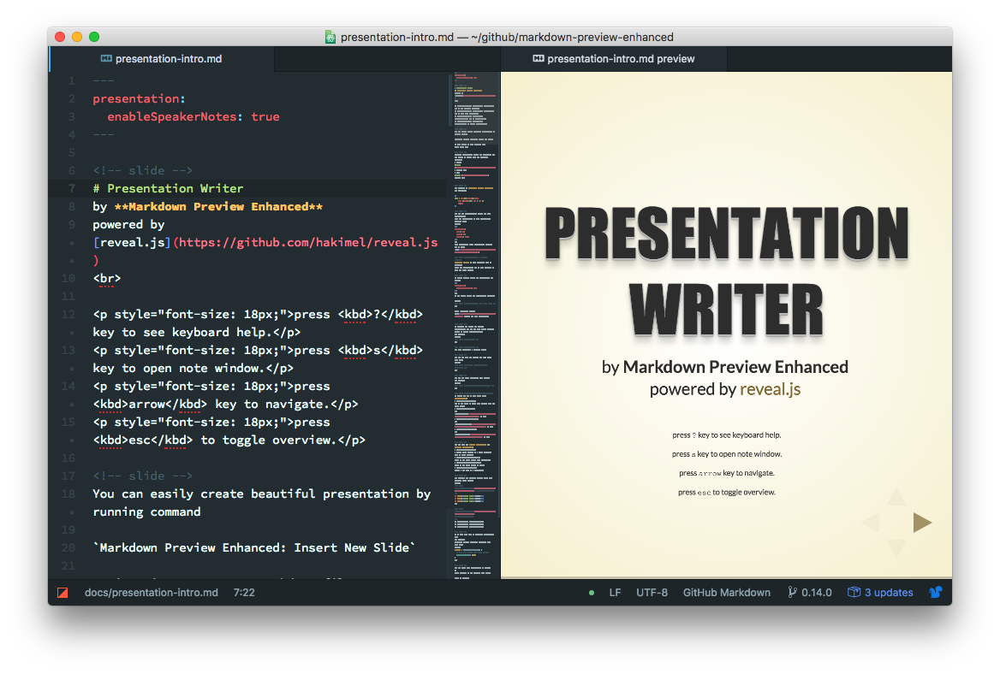
嵌入流程图，
数学公式，
更是不再话夏。
Markdown 与 VSCode
毋庸置疑，VSCode是非常好用的编辑器，通过各式插件，可以玩出花来。
安装插件方法：进入VSCode, 按下ctrl+P，然后输入 ext install + 插件名称 后，按下回车即可，例如, 安装流程图支持的markdown 插件: “ext install bierner.markdown-mermaid”。
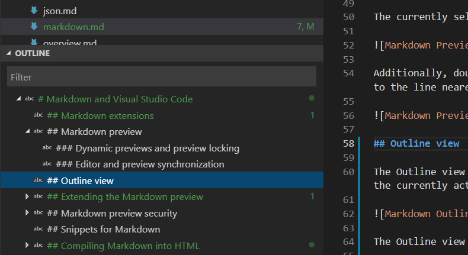
VSCode 自带大纲显示和导航。再装上如下的插件(当心：多图杀🐈️猫)，就是一个专业的Markdown编辑器。
- holmescn.vscode-wordcount-cjk: 在状态栏上显示文章的字数。
- bierner.markdown-emoji:
- 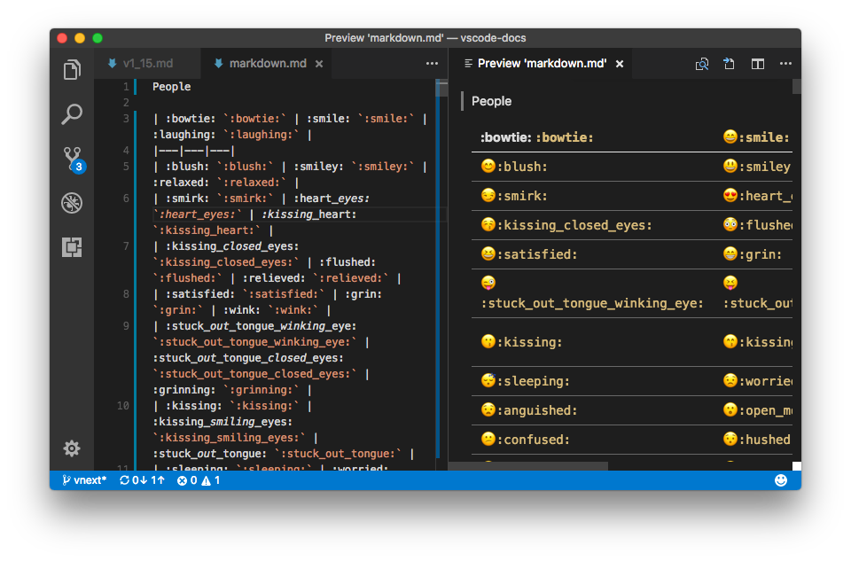
- darkriszty.markdown-table-prettify:
- alefragnani.Bookmarks:
- bierner.markdown-mermaid:
- bpruitt-goddard.mermaid-markdown-syntax-highlighting:
- Compulim.vscode-chinese-translation:
- docsmsft.docs-authoring-pack: 包含下面一系列的插件，装了这个，下面的就不用装了
- docsmsft.docs-article-templates: markdown 模板(目前对大小写区分的文件系统存在问题)
- docsmsft.docs-images:
- docsmsft.docs-linting
- docsmsft.docs-markdown: 可以在状态栏上显示Markdown格式的工具栏，或者用(Alt+M 呼唤)
- docsmsft.docs-metadata
- docsmsft.docs-preview
- docsmsft.docs-yaml
- blackmist.LinkCheckMD: 失效链接检查。
- DavidAnson.vscode-markdownlint: markdown 格式的语法检查
- streetsidesoftware.code-spell-checker: 单词拼写检查(可惜没有中文词库，默认带的是英文)
- docsmsft.docs-article-templates: markdown 模板(目前对大小写区分的文件系统存在问题)
- fabiospampinato.vscode-todo-plus: 让管理Todo(代办事宜)类别更容易。推荐
- jsynowiec.vscode-insertdatestring: 插入当前日期时间
- kisstkondoros.vscode-gutter-preview: 可以在右边指示器直接显示图片预览，以及鼠标预览图片 必装
- kortina.vscode-markdown-notes: 必装
- shd101wyy.markdown-preview-enhanced: 必装
- 如果想用它做文档导出，请参看它的文档: markdown-preview-enhanced文档

- tchayen.markdown-links: markdown-notes的最佳搭档
- telesoho.vscode-markdown-paste-image: 直接复制图像(ctrl+alt+v)并保存
- yzhang.markdown-all-in-one: 键盘快捷，TOC，列表编辑… 必装
- oderwat.indent-rainbow: 对不同层次的缩进显示不同颜色.
- redhat.vscode-yaml
- eliostruyf.vscode-front-matter:
- donjayamanne.githistory: 查看某个文件的版本历史. GIT必装
- eamodio.gitlens: 在文件内显示（灰色小字）每一处变更发生的时间和提交者 GIT必装
- softwaredotcom.swdc-vscode: 这货可以统计你在vscode上花费的时间.
- Shan.code-settings-sync: 可以将您的配置和安装的插件信息同步到
gist. 最新的Code-insiders测试版本已内置支持。